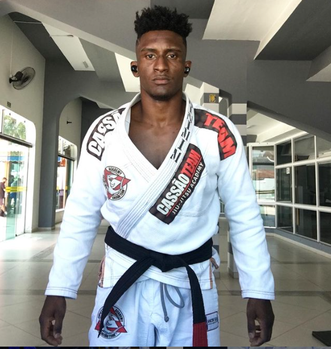

Vinicius Santos
idade : 23 Anos
Faixa preta Graduado por Cassão
Essas foram minhas conquistas nessa jornada
, foram 1 ano e 8 meses de faixa !! Terminando em 5º no Ranking da CBJJ faixa Marrom do Brasil
🥇Campeão Brasileiro Cbjj
🥇Campeão BjjSpBjjpro Cbjj
🥇Campeão Bh open Cbjj
🥇Campeão Floripa Open Cbjj
🥇Campeão Floripa Spring/Gi-Nogi Cbjj
🥇Campeão Vitória Open Cbjj
🥇Campeão Rio Fall Cbjj
🥇Campeão Uaejj Brasília Pro Peso/Abs
🥇Campeão Cbjje mundial
🥈Vice Curitiba Open
🥈Vice Sp BjjPro Peso/Abs Cbjj
🥈Vice Bh Spring Cbjj
🥉3º lugar Brasileiro Cbjj
🥉3º Rio Inter Cbjj
🥉3º Rio BjjPro Cbjj
🥉3º Sp BjjPro Abs Cbjj
Ansioso para 2021 !!

Treino realizado apenas com graduados de faixa azul ao preta,
Esta separação tem beneficios enormes pois cada um pode dar e receber o máximo do teu
amigo de treino...
Treino apenas com faixas brancas até 4° grau,
Esta divisão tem beneficios enormes pois cada um pode dar e receber o máximo do teu
amigo de treino...
Treino realizado apenas para crianças, ministrado pela professora Luiara Raquel , faixa marrom,
Diga-se de passagem um dos treinos mais divertidos pois tem brincadeiras educativas, risadas,
disciplina e muito aprendizado com esta super campeã faixa Marrom
Dias e Horários dos Treinos
kids
Todas as Terças e Quintas Feiras as 18:00 horas
Iniciantes
Todas as Segundas e Quartas as 19:00 horas
Graduados
Segunda a Sexta as 21:30 horas
 Agendar Aula Grátis
Agendar Aula Grátis